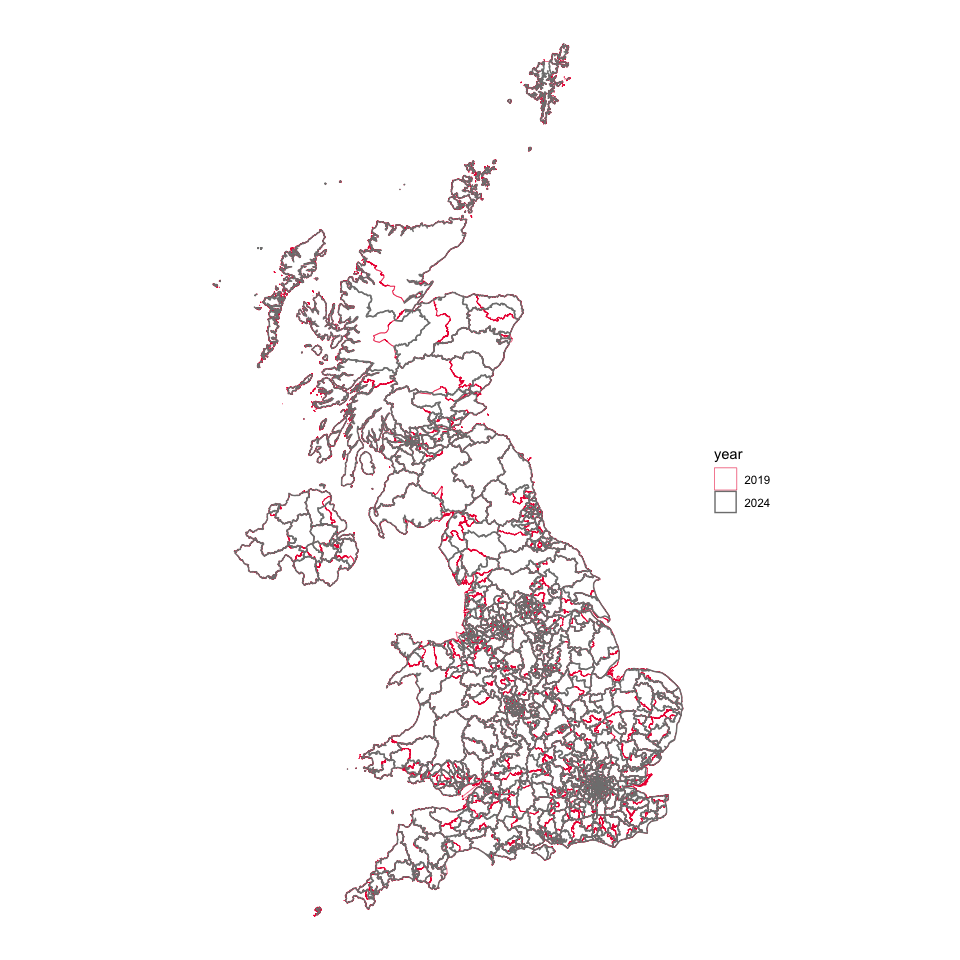
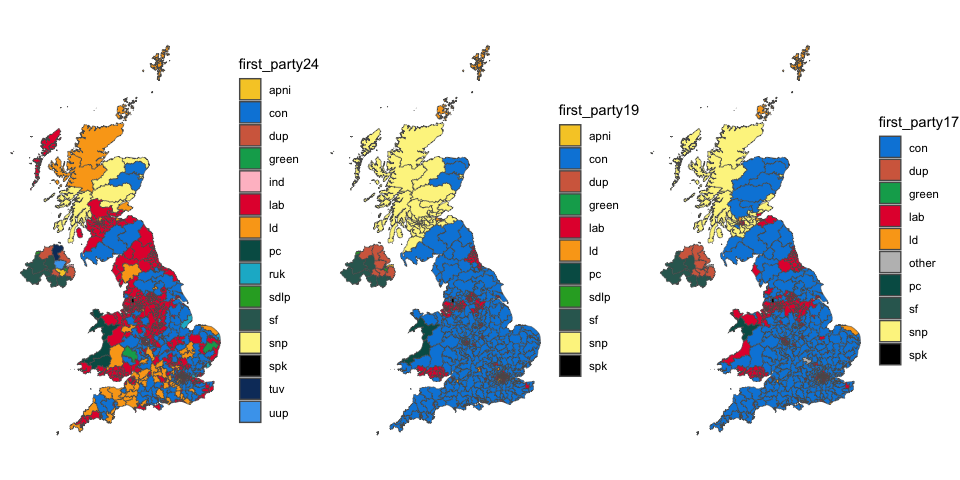
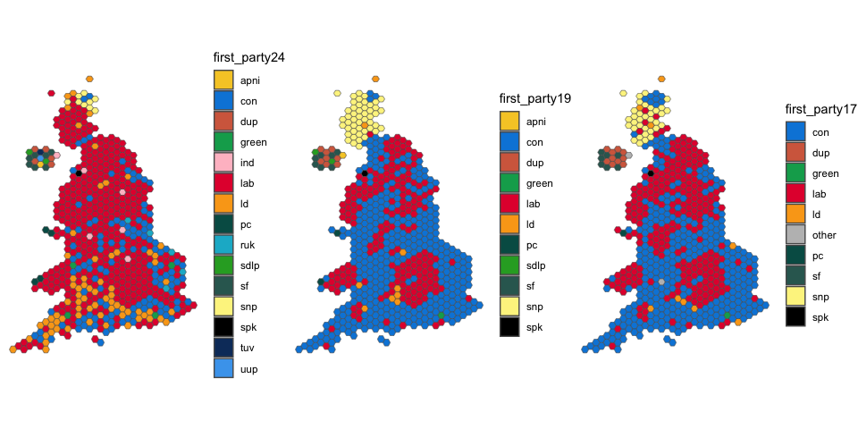
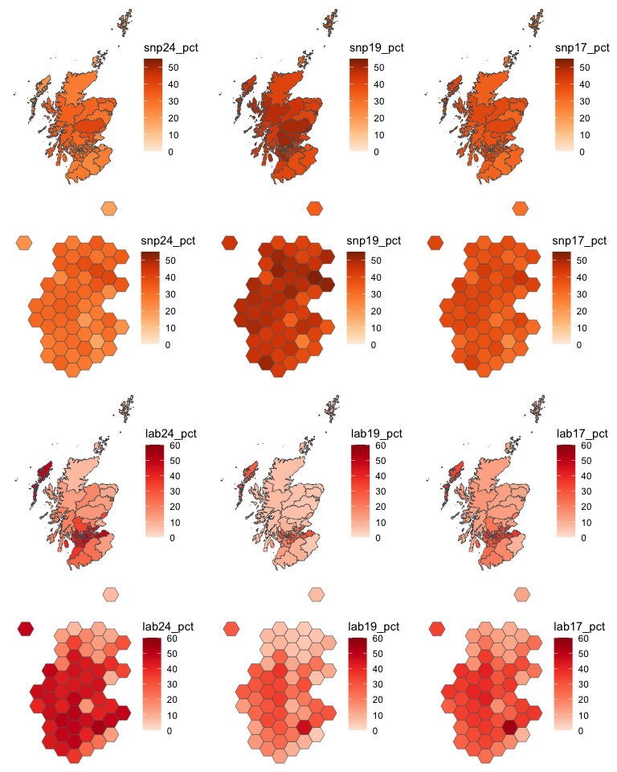

The 2017, 2019 and 2024 UK General Elections produced highly contrasting results.
It is, however, difficult to compare certain aspects of them because of boundary changes to constituencies which took effect for the 2024 election.
The goal of voteReproject is, by reprojecting voting data from the earlier elections to the 2024 boundaries, to provide datasets which are suitable for comparative analysis.
Installation
You can install the development version of voteReproject from GitHub with:
# install.packages("devtools")
devtools::install_github("horankev/voteReproject")Boundary changes
The 2024 and 2017/19 constituency boundaries for UK General Elections are mapped below.

Reprojection
Votes are allocated to new (2024) constituencies from the boundaries which existed in 2017/19 according to the proportion of the population living in areas of overlap. The first five entries of the table used for this projection are shown below.
| Current constituency code | Current constituency name | New constituency code | New constituency name | prop_old_in_new | Overlap UID |
|---|---|---|---|---|---|
| W07000049 | Aberavon | W07000081 | Aberafan Maesteg | 0.8167676 | Aberavon to Aberafan Maesteg |
| W07000049 | Aberavon | W07000103 | Neath and Swansea East | 0.1832324 | Aberavon to Neath and Swansea East |
| W07000058 | Aberconwy | W07000083 | Bangor Aberconwy | 1.0000000 | Aberconwy to Bangor Aberconwy |
| S14000001 | Aberdeen North | S14000060 | Aberdeen North | 0.7696923 | Aberdeen North to Aberdeen North |
| S14000001 | Aberdeen North | S14000061 | Aberdeen South | 0.2303077 | Aberdeen North to Aberdeen South |
source: https://commonslibrary.parliament.uk/boundary-review-2023-which-seats-will-change/
Examples
Party position
Below are shown the winning party in each constituency from the 2024 election and the first-placed party from the two previous elections subject to reprojection. The boundaries are sourced from https://geoportal.statistics.gov.uk and the voting data from https://commonslibrary.parliament.uk/tag/elections-data/.
ggarrange(
ggplot(votestogether) +
geom_sf(aes(fill=first_party24)) +
scale_fill_manual(values = party_palette) +
theme_void(),
ggplot(votestogether) +
geom_sf(aes(fill=first_party19)) +
scale_fill_manual(values = party_palette) +
theme_void(),
ggplot(votestogether) +
geom_sf(aes(fill=first_party17)) +
scale_fill_manual(values = party_palette) +
theme_void(),
ncol = 3
)
The problem of invisibility of constituencies which are small by area, usually dense urban settings, can be overcome by using hexagonal representations of the constituencies. Their positioning aims to closely resemble their actual relative position. Here, we use hexagons created by Philip Brown and Alasdair Rae from Automatic Knowledge (https://observablehq.com/@jwolondon/uk-election-2024-boundary-data).
ggarrange(
ggplot(votestogether_hex) +
geom_sf(aes(fill=first_party24)) +
scale_fill_manual(values = party_palette) +
theme_void(),
ggplot(votestogether_hex) +
geom_sf(aes(fill=first_party19)) +
scale_fill_manual(values = party_palette) +
theme_void(),
ggplot(votestogether_hex) +
geom_sf(aes(fill=first_party17)) +
scale_fill_manual(values = party_palette) +
theme_void(),
ncol = 3
)
Scotland
Looking at changes in votes in Scotland for the Scottish National Party (SNP) and Labour, in standard geographical form and as hexagons:
